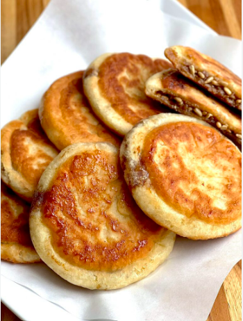

Hotteok

Description
Hotteok is a fried yeast dough pancake with traditionallly brown sugar filling. It is a popular winter street food in Korea and can be filled with different fillings such as cheese, nuts, japchae, red bea, etc
Ingredients
- All purpose flour
- Sweet rice flour
- Active dry yeast
- White sugar
- Salt
- Neutral oil
- Brown sugar
- Cinnamon
Steps
- Make filling by mixing the brown sugar and cinnamon
- Activate the yeast by combing warm water and sugar and let is sit for a few minutes
- Mix in the salt, oil, all purpose flour, and sweet rice flour into the activated yeast
- Cover the dough and let is sit for 1 hour
- After your dough rise, knead the dough and cover for another 30 minutes
- After 30 minutes, knead the dough, form a ball, and cut the dough into 8 equal pieces
- Flatten dough into 5 inch circles and put some filling into the middle
- Gather the edges and seal the dough around the filling
- Heat a pan on medium low and add oil for a shallow fry
- Place the dough sealed side down and fry the side down until golde
- Flip the ball and flatten the balls into pancakes
- Fry until other side is also golden brown
- Remove the hotteok from the heat and let is cool before eating